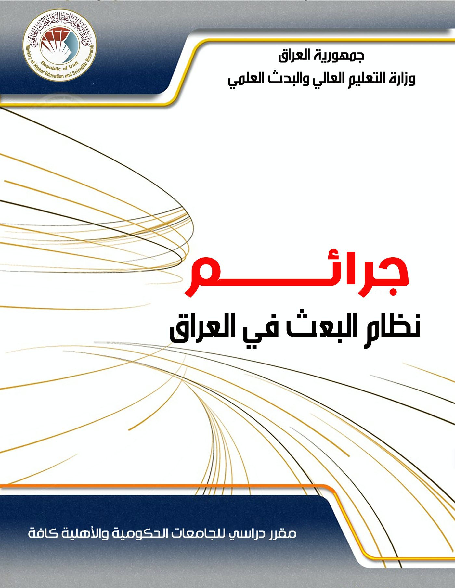
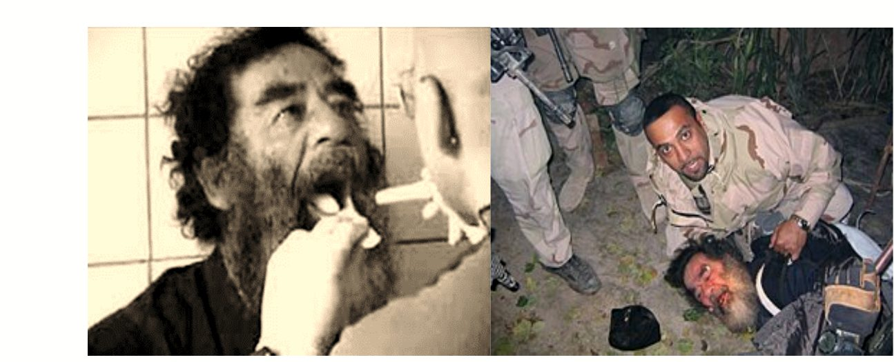
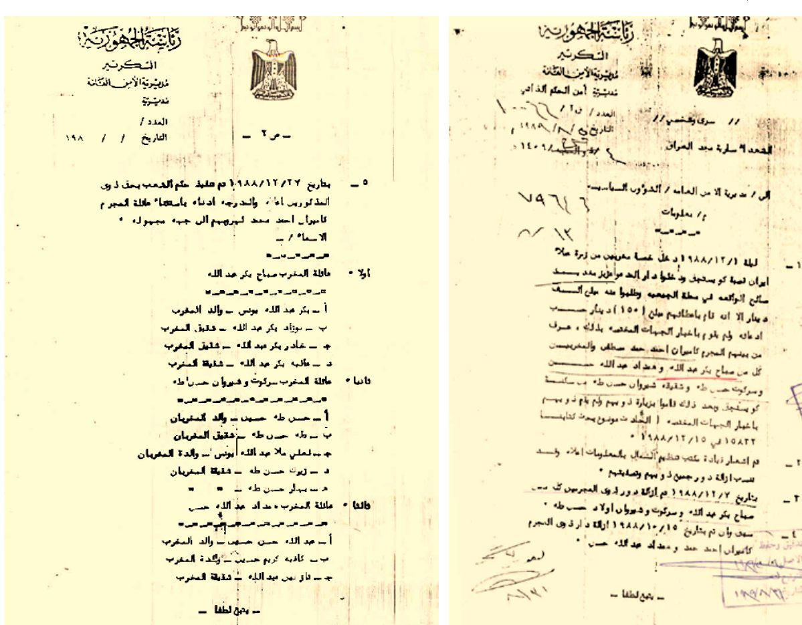
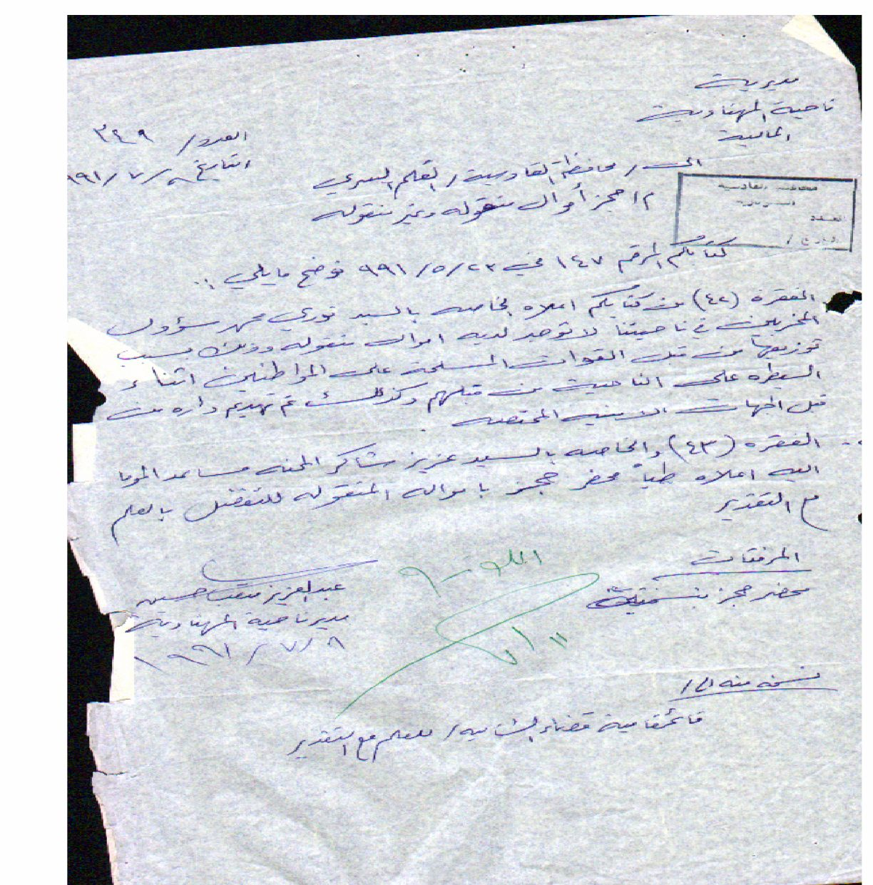
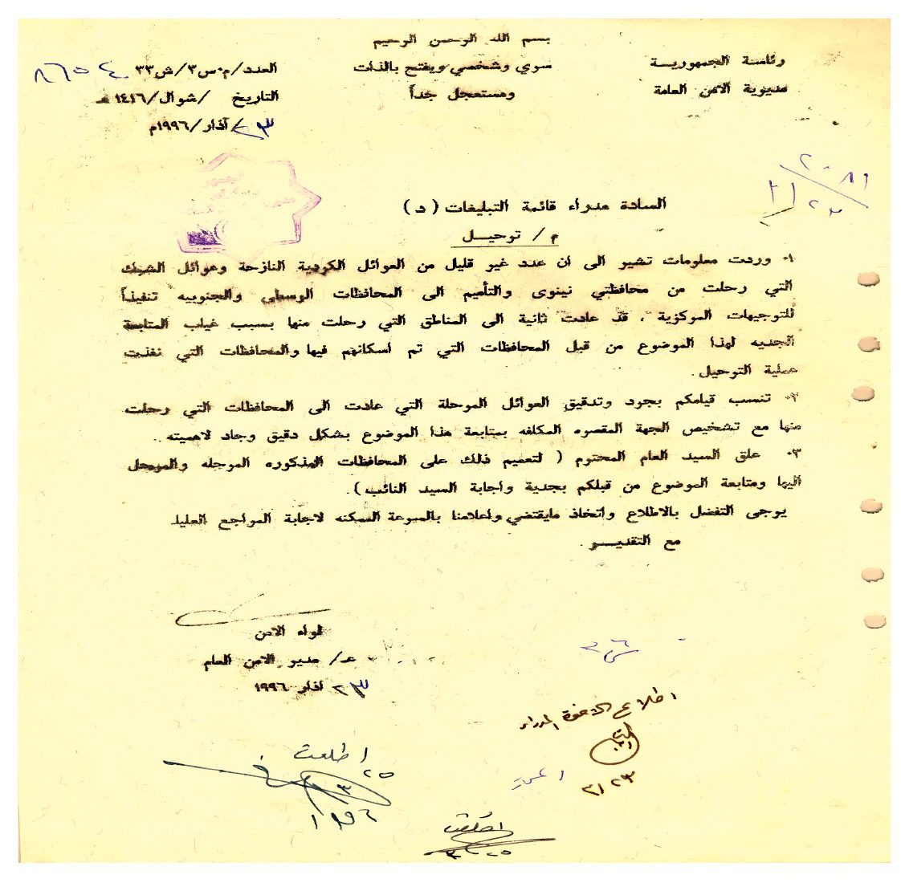
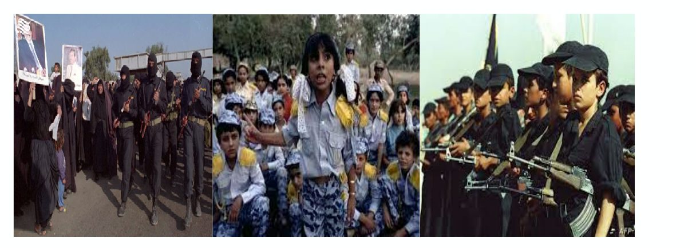
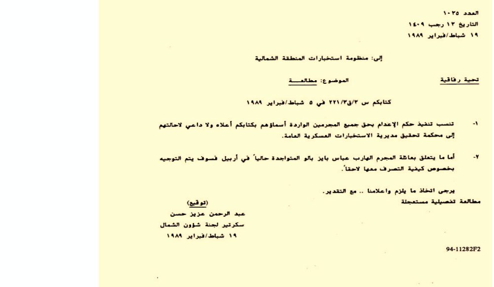
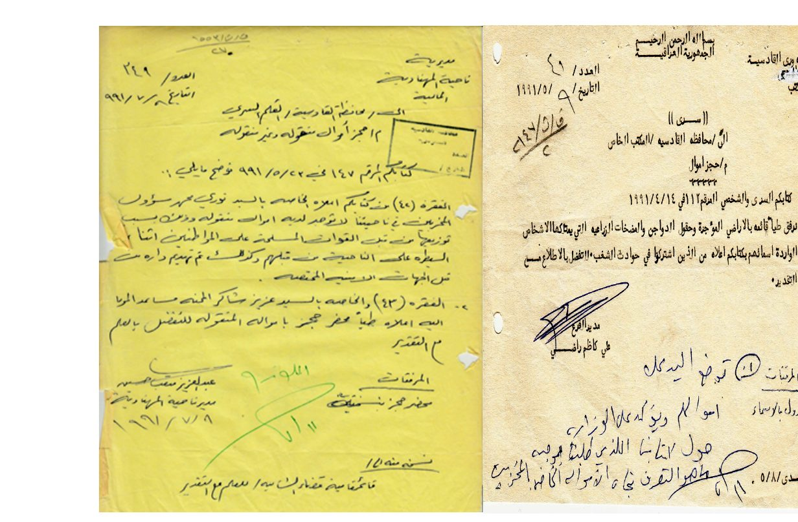
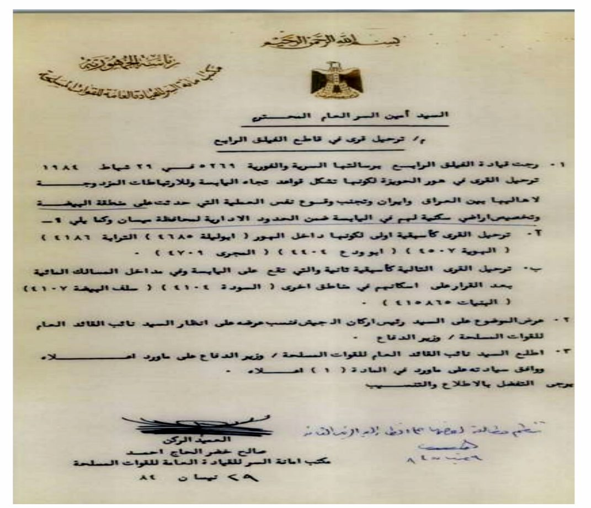
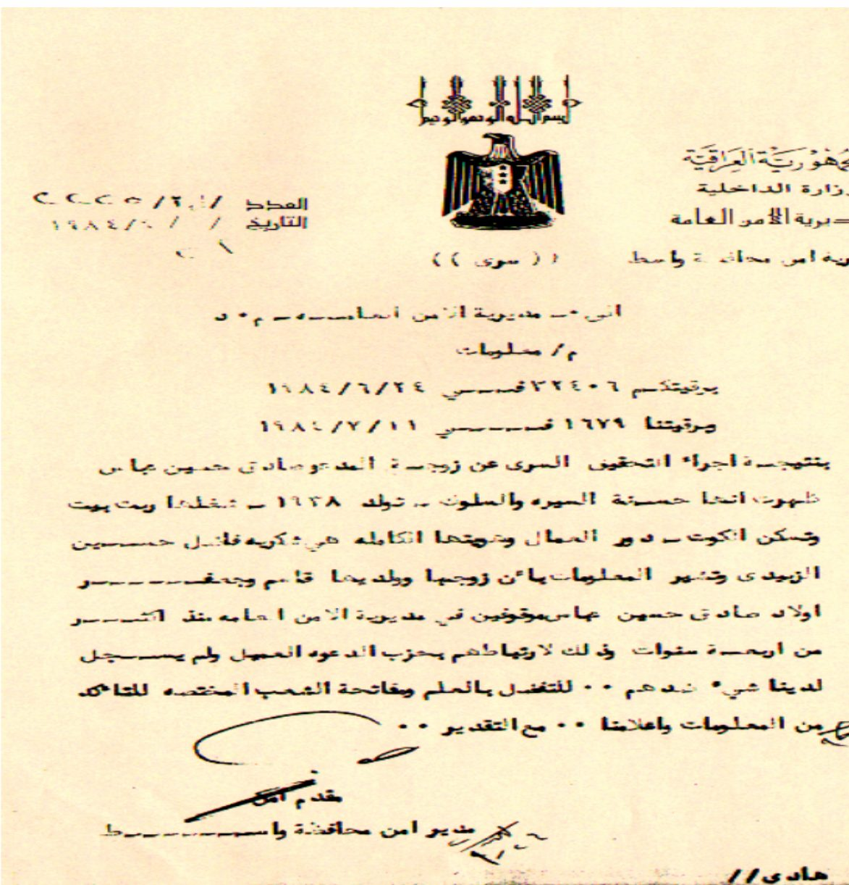

ملخص جرائم حزب البعثCrimes of the Baath Regime in Iraq — Summary 1
نظري · م01أقسام المحاضرة (8)
- مفهوم الجريمة لغة واصطلاحاًThe Concept of Crime
- أقسام الجرائمTypes of Crimes
- جرائم نظام البعث وفق قانون المحكمة وأنواع الجرائم الدوليةBaath Crimes under the Iraqi High Tribunal Law; International Crimes
- القرارات الصادرة من المحكمة الجنائية العلياRulings of the Iraqi High Criminal Court
- مسؤولية الدولة في حماية الحقوق ومستوياتهاState Responsibility: Three Levels
- الجرائم النفسية: آلياتهاPsychological Crimes: Mechanisms
- آثار الجرائم النفسية والجرائم الاجتماعيةEffects of Psychological Crimes; Social Crimes
- انتهاكات القوانين العراقية وحقوق الإنسانViolations of Iraqi Laws and Human Rights
مفهوم الجريمة لغة واصطلاحاًThe Concept of Crime

الفصل الأول:
جرائم نظام البعث وفق قانون المحكمة الجنائية العراقية العليا عام ٢٠٠٥م
ارتكب نظام البعث في العراق إبّان حكمه عدداً كبيراً من الجرائم المختلفة، واختلافها يُلزم بيان مفاهيم وتعاريف للطالب ليكون على معرفة ودراية بما يمر به مما لها علاقة بمادة المنهاج، كمفهوم الجريمة وأقسامها، والجرائم الدولية التي حُكِم عليها قيادات وأزلام نظام البعث وفق قانون المحكمة الجنائية العراقية العليا، وعليه سيكون هذا الفصل في مبحثين، المبحث الأول في بيان مفهوم الجرائم وأقسامها، والمبحث الآخر في بيان جرائم نظام البعث وفق قانون المحكمة الجنائية العراقية العليا لسنة ٢٠٠٥م.
١٫١. مفهوم الجرائم وأقسامها
مع بداية العصر الحديث ومع تطور الحياة تطورت أساليب الجريمة، وظهر ما يسمى بالجرائم المنظمة، وجرائم السلطة والجرائم البيئية والجرائم النفسية والجرائم الاجتماعية...ألخ،١، وعليه سيكون هذا المبحث في مطلبين، المطلب الأول: مفهوم الجريمة لغة واصطلاحاً، والآخر: أقسام الجرائم.
١٫١٫١. تعريف الجريمة لغة واصطلاحا
١. لغة هي الذنب، تقول منه (جرم، و أجرم، واجترم) والجرم بالكسر للجسد وقوله تعالى: ﴿ وَلَا يَجْرِمَنَّكُمْ شَنَآنُ قَوْمٍ عَلَىٰٓ أَلَّا تَعْدِلُواْ ﴾ (المائدة/٢) أي لا يحملنكم و (تجرم) عليه، أي ادعى عليه ذنباً لم يفعله،٢ ويقال: فلان جريمة أهله أي كاسبهم، فالجريمة والجارم بمعنى الكاسب. واجرم فلان أي اكتسب الإثم٣ فالجريمة من الجرم أي التعدي، وتعني الانحراف والشذوذ عن السلوك والمقاييس الجمعيّة الاعتيادية.٤
- • ١- د. حسين عليوي ناصر الزيادي، جغرافية الجريمة مبادئ وأسس، دار الحصاد، دمشق، ٢٠١٥، ص٢٣.
- • ٢- محمد أبو بكر الرازي: مختار الصحاح، مكتبة لبنان، ١٩٨٩، ص٨٩.
- • ٣- محمد بن احمد القرطبي، الجامع لإحكام القران (تفسير القرطبي)، دار الكتاب العربي، القاهرة، ١٩٦٧.
- • ٤- حسين عليوي ناصر الزيادي، جغرافية الجريمة، مصدر سابق، ص٢٦.
٢. الجريمة اصطلاحا: - نظراً لخطورة الجريمة وأثرها السلبي في الفرد، والمجتمع، والمؤسسة سنورد معناها اصطلاحا بحسب ما جاء من بيان لها في مستوى العلوم، فقد ورد مفهومها في:
أ. علم الاجتماع: وردت فيه بمعنى أفعال وسلوكيات تتعارض مع المصلحة العامة للجماعة، بمعنى أنَّها اعتداء على معايير المجتمع أو قواعده التي تحكم سلوك أفراده، فالجريمة من الناحية الاجتماعية تمثل تعارضاً مع السلوك الاجتماعي الذي يقره المجتمع وسلوك الفرد
ب. علم النفس: عُرّفت بأنَّها سلوك معادٍ أو فعل لا إرادي ناتج عن صراعات نفسية تحدثها مكبوتات اللاشعور، فهي انعكاس لما تحتويه شخصية الفرد من مرض نفسي يعبر عن صراعات انفعالية لاشعورية، فهي انطلاق للدوافع الغريزية انطلاقاً حراً لا يعوقه عائق، ولا يحده حد.
ج. علم القانون: عُرِفت بأنَّها كل فعل أو ترك يعاقب عليه القانون، ولا يبرره استعمال حق أو واجب٥، أي كل ما نص القانون على تجريمه من التصرفات والسلوكيات والأقوال وجعل له عقوبة واضحة وصريحة، ويتخذ التصرف العدائي صورتين إما أن يكون تصرفاً مادياً أو تصرفاً معنوياً.
د. علم الشريعة: عُرّفت بأنَّها ارتكاب كل فعل نهى الله (عز وجل) عنه أو عصيان ما أمر الله به٦، فهي سلوك إنساني غير سوي يخالف الفطرة السليمة ويمثل تعدياً على حق أو مصلحة من مصالح العباد التي يحميها الشرع، وهي كل سلوك إنساني غير مشروع، يرتب له الشرع جزاءً جنائياً؛ لأن هناك ضابطاً دينياً يحكم سلوك الفرد، ووفقا لذلك فإنَّ الجريمة تعدّ سلوكاً إنسانياً منحرفاً عن الطريق المستقيم، والجريمة بهذا التعريف على عكس المفهوم الوضعي للجريمة الذي تعددت مفاهيمه وتنوعت أبعاده باختلاف العلوم البشرية.
وتأسيساً على ما تقدم من تعاريف مختلفة ظهرت علوم فرعية دقيقة لدراسة الجريمة والمجرم، مثل: علم النفس الإجرامي، وعلم طبائع المجرم، وعلم الجريمة الجنائي، وعلم جغرافية الجريمة الذي يؤكد الأنماط المكانية والزمانية للجريمة، ودراسة العوامل الطبيعية والبشرية المؤثرة في السلوك، وكل علم ينظر إلى الجريمة ويدرسها من الزوايا التي يختص بها مع إعطاء أهمية قليلة للجوانب الأخر، وفي ضوء التعريفات السابقة وغيرها يمكن أن يتضح لنا مفهوم الجريمة الذي هو أي فعل ينتهك القانون ويعاقب عليه بواسطة النظام القانوني.
- • ٥- جندي عبد الملك، الموسوعة الجنائية، الجزء الثالث، دار احياء التراث العربي، بيروت، ١٩٩٠م، ص٦.
- • ٦- محمد أبو زهرة، الجريمة والعقوبة في الفقه الإسلامي، قسم الجريمة، دار الفكر العربي، بلا، د. ت، ص٢٥.
أقسام الجرائمTypes of Crimes
١٫١٫٢. أقسام الجرائم
للجرائم تقسيمات مختلفة باختلاف اعتباراتها وبواعثها وغاياتها وسنذكر بعض الجرائم التي ارتكبها نظام البعث في العراق وهي:
١. الجرائم الدولية: هي الأفعال التي تمثل الجرائم الدولية الأشد خطورة على السلم والأمن الوطني والدولي، التي تهدد أمن الدولة وسيادتها وهي جرائم الإبادة الجماعية وجرائم ضد الإنسانية، وجرائم الحرب
٢. الجرائم السياسية: هي مجموعة من الأفعال والأقوال المقصودة يتم الاعتداء بها على رجال الدولة أو الحكومة أو أصحاب السلك الدبلوماسي أو قادة الفكر السياسي أو أفراد وجماعات بسبب ما يحملونه من أراء سياسية، وبتعبير مختصر هي عمل سياسي يجرمه القانون.
٣. الجرائم الاجتماعية: هي ارتكاب لأفعال أو تصرفات تعارض القيم والمعايير الاجتماعية للمجتمع وتلحق ضرراً بالمجتمع وأفراده، كالسرقة والتعاطي مع المخدرات والهروب من المسؤولية الاجتماعية، فهي اساساً تصنيف يرتبط بالمجتمع والعلاقات الاجتماعية بين الأفراد. هذه الجرائم لا تتعلق فقط بالأضرار المادية أو الجسدية، بل تؤثر أيضاً في العلاقات والثقة بين أفراد المجتمع.
٤. جرائم السلطة والحكومة: هي الأفعال غير القانونية أو الفاسدة التي يرتكبها أفراد أو مؤسسات في مواقع سلطوية أو حكومية، وتشمل هذه الجرائم مجموعة متنوعة من التصرفات غير القانونية التي تتعلق بسوء الاستخدام السلطة بما تتضمنه من فساد وسوء سلوك، وانتهاكات حقوق الإنسان، واستغلال السلطة بأشكال مختلفة.
٥. الجرائم النفسية: هي الجرائم التي تنطوي على أفعال وسلوكيات وتصرفات تؤذي الضحية نفسيًا أو عاطفيًا، وعادةً ما تكون هذه الجرائم مرتبطة بالتهديدات النفسية.
٦. جرائم حرية الدين والمعتقد: هي الأفعال أو السلوكيات التي تنتهك المعتقدات والقيم الدينية لشخص أو مجتمع معين ويندرج تحتها: ازدراء الأديان وانتقاصها بطريقة تسيء إلى معتقدات الآخرين، والإساءة للرموز الدينية، اضطهاد علماء الدين، والتمييز الديني ضد الأفراد أو المجموعات بناءً على ديانتهم، والعنف الديني مثل تهديم دور العبادة والمقدسات، والتلاعب بالديانة لأغراض سياسية: كاستخدام الديانة وسيلة لتحقيق أهداف سياسية.
٧. جريمة مصادرة الأموال: هي عملية انتزاع أموال أو ممتلكات شخص ما بشكل غير قانوني أو بالقوة دون وجه حق، وهذه من الجرائم التي ارتكبها نظام البعث مع الآف العراقيين.
٨. جريمة التهجير: هي عملية إجبار الأفراد أو المجتمعات على مغادرة منازلهم وأماكن إقامتهم بشكل قسري ودون موافقتهم الحرة. تعد هذه الجريمة واحدة من أكثر أشكال انتهاكات حقوق الإنسان تنكراً وتدنياً، يمكن أن تحدث التهجير لأسباب متنوعة، مثل الصراعات السياسية أو الدينية، والعنف، والتمييز العرقي أو القومي، أو لأسباب أُخَر.
٩. الجرائم البيئية: فعل أو امتناع عمدي أو غير عمدي، يصدر عن شخص طبيعي أو معنوي، يضر أو يحاول الإضرار بأحد العناصر البيئية، سواء بطريق مباشر أو غير مباشر كقطع الأشجار وإتلاف النباتات والتلويث كأفعال إيجابية، أو امتناع ربان السفينة عن الإبلاغ عن التسرب النفطي في البحر أو عدم الإبلاغ عن استعمال مواد خطرة.٧
١٠. انتهاكات حقوق الإنسان: يقصد به أي سلوك أو تصرف يصدر من حكومة أو جهة فاعلة، يتضمن اعتداءً على الحقوق الأساسية والكرامة الإنسانية التي يتمتع بها كل إنسان بموجب بنود القانون الدولي الأساسية في المواثيق والمعاهدات الدولية الخاصة بحقوق الإنسان، التي يجب أن تكون متاحة ومحمية لكل فرد بغض النظر عن جنسه أو أصله، أو لونه، أو ديانته، أو أي خصائص أخرى ولا يحقُّ لأي حكومةٍ، أو مجموعةٍ، أو فردٍ، القيام بأي فعلٍ يسيء للآخرين أو ينتهك حقوقهم.٨
- • ٧- د. حسين عليوي، د. عباس عطيه القريشي، الجرائم البيئية في عهد النظام البعثي، الناشر: المركز العراقي لتوثيق جرائم التطرّف، المطبعة: دار الكفيل- كربلاء، ٢٠٢٣ ص٢٤.
- • ٨- ينظر: الموقع الرسمي للأمم المتحدة على الرابط الإلكتروني https://www.un.org/ar/global-issues/human-rights
جرائم نظام البعث وفق قانون المحكمة وأنواع الجرائم الدوليةBaath Crimes under the Iraqi High Tribunal Law; International Crimes
١٫١٫٣. جرائم نظام البعث وفق توثيق قانون المحكمة الجنائية العراقية العليا عام ٢٠٠٥م
ارتكب نظام البعث وفق توثيق قانون المحكمة الجنائية العراقية العليا عددا من الجرائم وهي جرائم الإبادة الجماعية وجرائم ضد الإنسانية وجرائم حرب و انتهاكات للقوانين العراقية كالتدخل في شؤون القضاء أو محاولة التأثير في أعمال، وهدر الثروة الوطنية وتبديدها استناداً إلى أحكام الفقرة (ز) من المادة الثانية من قانون معاقبة المتآمرين على سلامة الوطن ومفسدي نظام الحكم رقم (٧) لسنة ١٩٥٨، وسوء استخدام المنصب والسعي وراء السياسات التي كادت أو تؤدّي إلى التهديد بالحرب أو استخدام القوات المسلحة العراقية ضد دولة عربية وفقاً للمادة الأولى من القانون رقم (٧) لسنة ١٩٥٨، وانتهاكات منظومة حقوق الإنسان على أُسس طائفية ومذهبية ودينية، وعرقية وإثنية وقومية بحق أبناء الشعب العراقي وعليه سيكون هذا المبحث في مطلبين، المطلب الأول: أنواع الجرائم الدولية المرتكبة من نظام البعث والمطلب الآخر: القرارات الصادرة من المحكمة الجنائية العليا.
١٫١٫٤. أنواع الجرائم الدولية:
١. الإبادة الجماعية: تعني الأفعال المرتكبة بقصد إهلاك جماعة قومية أو اثنية أو عرقية أو دينية بصفتها هذه إهلاكا كليا أو جزئيا، وهي:
- • أ- قتل أفراد من الجماعة.
- • ب- إلحاق ضرر جسدي أو عقلي جسيم بأفراد من الجماعة.
- • ج- إخضاع الجماعة عمدا لأحوال معيشية يقصد بها إهلاكها الفعلي كليا أو جزئيا.
- • د- فرض تدابير تستهدف منع الإنجاب داخل الجماعة.
- • هـ- نقل أطفال من الجماعة عنوة إلى جماعة أخرى.
٢. الجرائم ضد الإنسانية: تعني الأفعال التي ارتكبت في إطار هجوم واسع النطاق أو منهجي موّجه ضد مجموعة من السكان المدنيين وعن علن بهذا الهجوم. وبتعبير آخر هي انتهاكات جسيمة للقانون الدولي تُرتكب ضد مدنيين أو مقاتلين في أثناء نزاع مسلح، وتؤدي إلى تحميل مرتكبيها مسؤولية جنائية فردية،٩ وتشمل:
- • أ- القتل العمد.
- • ب- الإبادة.
- • ج- الاسترقاق.
- • د- إبعاد السكان أو النقل القسري لهم.
- • هـ- السجن أو الحرمان الشديد على أي نحو آخر من الحرية البدنية بما يخالف القواعد الأساسية للقانون الدولي.
- • و- التعذيب.
- • ز- الاغتصاب، الاستعباد الجنسي، الإكراه على البغاء، الحمل القسري، أو أي شكل آخر من أشكال العنف الجنسي على مثل هذه الدرجة من الخطورة.
- • ح- اضطهاد جماعة محددة أو مجموعة محددة من السكان لأسباب سياسية أو عرقية، أو قومية، أو أثنية، أو ثقافية، أو دينية، أو متعلّقة بالجنس، أو لأسباب أخرى لا يجيزها القانون الدولي وذلك فيما يتصل بأي فعل مشار إليه من أشكال العنف الجنسي على مثل هذه الدرجة من الخطورة.
- • ط- الإخفاء القسري للأشخاص.
- • ي- الأفعال غير الإنسانية الأخر ذات الطابع المماثل التي تتسبب عمدا في معاناة شديدة أو في أذى خطير يلحق بالجسم، أو بالصحة العقلية أو البدنية.
- • ٩- انظر: المادة الثامنة من "نظام روما" المعاهدة المؤسسة للمحكمة الجنائية الدولية التي تم اعتمادها في يونيو ١٩٩٨
٣. جرائم الحرب: وهي خروقات جسيمة لاتفاقيات جنيف المؤرخة في ١٢ آب ١٩٤٩ وبالتحديد أي فعل من الأفعال المدرجة في أدناه المرتكبة ضد الأشخاص أو الممتلكات المحمية بموجب أحكام اتفاقية جنيف ذات العلاقة:
- • أ- القتل العمد.
- • ب- التعذيب أو المعاملة غيرالإنسانية بما في ذلك إجراء تجارب بايولوجية.
- • ج- تعّمد إحداث معاناة شديدة أو إلحاق أذى خطير بالجسم أو بالصحة.
- • د- إلحاق تدمير واسع النطاق بالممتلكات والاستيلاء عليها دون أن تكون هناك ضرورة عسكرية تسوغ ذلك وبشكل مخالف للقانون وبطريقة عابثة.
- • هـ- إرغام أسير حرب أو شخص محمي على الخدمة في قوات سلطة معادية.
- • و- تعمّد حرمان أسير حرب أو شخص محمي من حقه في أن يحاكم محاكمة عادلة ونظامية.
- • ز- الحجز غير القانوني.
- • ح- الإبعاد أو النقل غير القانوني.
- • ط- أخذ رهائن.
القرارات الصادرة من المحكمة الجنائية العلياRulings of the Iraqi High Criminal Court
١٫١٫٥. القرارات الصادرة من المحكمة الجنائية العليا
بعد انتهاء فترة حكم البعث في العراق بمعركة بدأت يوم ١٩-٣-٢٠٠٣م وانتهت بـ١-٥-٢٠٠٣م بهروب رأس النظام البعثي (صدام حسين) وكافة تشكيلاته من أرض المعركة، وتركهم أرض الوطن، والعرض، والمقدسات، والقصور الفارهة، والاختفاء في البراري، والأرضي الزراعية، والأنفاق، والحفر خوفا من الموت والأسر، وبعد إلقاء القبض على عدد منهم وتسليم بعضهم نفسه لقوات الاحتلال صدر - بناءً على ما أقرّته الجمعية الوطنية طبقا للمادة الثالثة والثلاثين الفقرتين (أ - ب) والمادة السابعة والثلاثون من قانون إدارة الدولة العراقية للمرحلة الانتقالية - قرار مجلس الرئاسة بجلسته المنعقدة بتاريخ ٩/١٠/٢٠٠٥م بإصدار قانون المحكمة الجنائية العراقية برمز النص (٣٣ E رقم ١٠ لسنة ٢٠٠٥) الذي نصَّ على تأسيس المحكمة وهيكلها التنظيمي وذكر أن تؤسس محكمة تسمى (المحكمة الجنائية العراقية العليا) وتتمتع بالاستقلال التام، وتسري ولاية المحكمة على كل شخص طبيعي سواء أكان عراقيا أم غير عراقي مقيم في العراق ومتهم بارتكاب إحدى الجرائم المنصوص في المواد (١١، ١٢، ١٣) و هي جرائم الإبادة الجماعية، والجرائم ضد الإنسانية، وجرائم الحرب، وانتهاكات للقوانين العراقية لمجرمي نظام البعث وحزبه ممن ارتكبوا تلك الجرائم بدأ من تاريخ ١٧-٧-١٩٦٨ ولغاية ١-٥-٢٠٠٣ في جمهورية العراق أو أي مكان آخر.

من أبرز القضايا والجرائم التي نظرت فيها المحكمة هي-:
١. جريمة مجزرة الدجيل عام ١٩٨٢م التي استهدف فيها الشيعة من أهالي الدجيل بالإعدام لأكثر من ١٤٨ شخصا بين أحداث والاعتقالات التعسفية لعشرات العوائل من النساء والأطفال وحبسهم لسنوات في صحراء من دون توفير أدنى مستلزمات العيش الكريم بل تُركوا في العراء تصهرهم حرارة الشمس ولهيب الصحراء في الصيف وتحت المطر وبرد الشتاء القارص لأكثر من أربع سنوات، وتهديم حي الوحدة بالكامل وإزالته من الوجود، وتجريف أكثر من ٢٥٠٠٠٠ دونم كانت بساتين وأراضي زراعية بين قضائي بلد والدجيل ومصادرتها من أصحابها. وانتهت المحاكمة بصدور حكم الإعدام ضد المجرم (صدام حسين).
٢. جريمة قصف مدينة حلبجة عام ١٩٨٨م التي استهدف فيها النظام البعثي أبناء الشعب العراقي من الكرد باستعمال السلاح الكيماوي (غاز الخردل، وغاز السارين) وتجاوز عدد الضحايا الـ ٥٠٠٠ إنسان بين نساء وأطفال وشيوخ وشباب وانتهت المحاكمة بصدور حكم الإعدام ضد المجرم الذي ارتكبها تنفيذا (علي حسن المجيد).
٣. جريمة عمليات الأنفال التي نفذها نظام البعث الديكتاتوري ضد المواطنين المدنيين الكرد. وقد تضرر بها عدد من المواطنين المسيحيين وقراهم وكنائسهم القديمة والحديثة، إذ بدأت في ٢٢ شباط العام ١٩٨٨، واستمرت لغاية ٦ أيلول من العام نفسه، وعمليات الأنفال عبارة عن ثمانية مراحل عسكرية شاركت فيها قوات
٧. تصفية الأحزاب الدينية والعلمانية، ارتكب النظام البعثي الدكتاتوري جرائم عديدة ضد الأحزاب السياسية في العراق وأصدر قرارا ينص على تجريم المتعاطفين مع تلك الأحزاب وبأثر رجعي، وبناءً على الأدلة والوثائق التي أثبتت إعدامه لمئات الألاف من الرجال و النساء والأطفال، أصدرت المحكمة الجنائية العليا حكم الإعدام ضد المجرم (طارق عزيز)، والمجرم (عبد حمود)، والمجرم (سعدون شاكر)، والمجرم (سبعاوي إبراهيم الحسن)، والمجرم (عبد الغني عبد الغفور)؛ لإدانتهم في قضية تصفية الأحزاب.
٨. جريمة تهجير الكرد الفيليين، ارتكب النظام البعثي جرائم عديدة بحق الكرد الفيليين تمثلت باعتقال عشرات آلاف من الأسر الكردية الفيلية في بغداد ومحافظات الوسط وجنوب العراق، وتهجير أكثر من نصف مليون إنسان إلى الجمهورية الإسلامية الإيرانية، عبر مناطق حدودية مزروعة بالألغام، بعد مصادرة أملاكهم وأموالهم المنقولة وغير المنقولة والتهجير القسري كان بين أعوام ١٩٦٩-١٩٧٢ و١٩٨٠-١٩٩٠، وجرى التهجير للعوائل بعد اعتقال الشباب الذين تتراوح أعمارهم من ١٨-٢٨ سنة في سجون المحافظات بعدها قام النظام البعثي بإعدام الشباب، وإجراء التجارب الكيمياوية عليهم، وكان اضطهاد النظام البعثي للكرد الفيليين شديداً جداً ويعود إلى سببين أساسيين، أحدهما: أنهم شيعة لأهل البيت (عليهم السلام)، ثانيهما: انَهم كرد، ولم تتوقف جرائم البعث ضدهم إلى هنا بل اخذ يشجع العراقيين المتزوجين من نساء الكرد الفيليين على تطليقهن أو تهجيرهن وجاء ذلك بالقرار رقم (٤٧٤) في ١٥/٤/١٩٨١، إذ يصرف بمقتضاه للزوج المتزوج من امرأة من التبعية الإيرانية - الكردية الفيلية - مبلغ قدره (٤٠٠٠) دينار إذا كان عسكريا و(٢٥٠٠) دينار إذا كان مدنيا في حالة طلاقه من زوجته وتهجيرها إلى خارج القطر، وكذلك أقدم النظام الظالم على إسقاط الجنسية العراقية عن مئات الآلاف من العراقيين الكرد الفيليين بقرار صادر عن مجلس قيادة الثورة الظالم رقم ٦٦٦ المؤرخ في ٧/٥/١٩٨٠ ونُشر في جريدة الوقائع العراقية الرسمية رقم ٢٧٧٦، وقد صدر قرار للمحكمة الجنائية العراقية العليا بوصف ما ارتكبه النظام البعثي من جريمة بحق الكرد الفيليين في تشرين الثاني/نوفمبر ٢٠١٠م (جريمة إبادة جماعية) و(جرائم ضد الإنسانية).
مسؤولية الدولة في حماية الحقوق ومستوياتهاState Responsibility: Three Levels
الفصل الثاني
الجرائم النفسية والاجتماعية وآثارها، وأبرز انتهاكات النظام البعثي في العراق
إن الدولة بحكم وظيفتها مسؤولة عن حماية جميع المصالح القانونية للمجتمع، وتشمل حقوق الأنسان وحرياته الأساسية والتي لا يجوز إهدارها تحت أي مسوغ أو عنوان، فالتشريع بشكل عام يتحمل مسؤولية تحقيق التوازن الذي يوقف الصراع بين مصلحة المجتمع من جهة ومصلحة الفرد المتشبث بحقوقه من جهة أخرى بثلاث مستويات:
المستوى الأول: المستوى التشريعي، وفيه يتحتم على الدولة تعزيز أدوات الضمانة الدستورية للحقوق والحريات بالشكل الذي يكفل تحقيق التوازن ما بين مصلحة الفرد والمصلحة العامة في اطار محكوم بالرقابة القضائية والمستقلة على ذلك إذ ينفرد دور السلطة التشريعية باحترام الحقوق اللصيقة بالإنسان ومنع الاعتداء عليها، وذلك بتجريم المساس بها مثل المساس بالحقوق المدنية والسياسية كالحق في الحياة والحق بسلامة الجسد، أو الحق في الحرية أو الحقوق الاقتصادية والاجتماعية والثقافية من قبيل الحق في التعليم أو الحق بالعمل والحق في العيش اللائق أو الحق في حرية الاعتقاد والعبادة وحرية الصحافة وغيرها أو حقوق البيئة والتنمية، وإيقاع العقاب الرادع عند انتهاكها وتعزيز مبدأ سيادة القانون على الجميع كأساس للمشروعية.
المستوى الثاني: المستوى التنفيذي فيه ضمان تنفيذ السياسات التشريعية المتعلقة بالمواطن في ظل احترام المبادئ الأساسية وأهمها:
- 1. مبدأ شرعية الجرائم والعقوبات.
- 2. مبدأ المساواة وعدم التمييز أمام القانون.
- 3. مبدأ حرية الرأي والتعبير.
- 4. مبدأ عدم رجعية قانون العقوبات إلا إذا كان أصلح للمتهم.
- 5. مبدأ شخصية العقوبة.
- 6. مبدأ إن الأصل في المتهم البراءة.
- 7. مبدأ التناسب بين الجريمة والعقاب.
- 8. مبدأ الحق في محاكمة عادلة أمام سلطة قضائية مختصة تكفل احترام حقوق الدفاع.
المستوى الثالث: المستوى القضائي، ولعل أبرز أدوات الدولة فاعلية في صيانة حقوق الأنسان وتعضيدها هو القضاء الذي يمثل ضمانة حماية المجتمع أمام سطوة الدولة وصلاحية السلطتين التشريعية والتنفيذية وما يمكن أن تتخذه من إجراءات تنتهك حقوق الأنسان، بوصفها الضامنة لسيادة حكم القانون العادل بما في ذلك احترام حقوق الفرد، وتحقيق العدل والإنصاف، ولكن نظام البعث لم يؤدِ أياً من تلك المسؤوليات بل العكس، فقد أذاق المواطن العراق ويلات كثيرة فارتكب جرائم كثيرة وانتهاكات سيذكرها هذا الفصل في مباحث ثلاثة:
الجرائم النفسية: آلياتهاPsychological Crimes: Mechanisms
٢٫١. الجرائم النفسية
٢٫١٫١. آليات الجرائم النفسية
إن مجيء نظام البعث الى السلطة في العراق كان ضمن خطة مدروسة ومقررة مند بدايـات القرن الماضي. والخطة بدأت على شكل مراحل تكمل أحداها الأخرى ابتداءً من اسقاط النظام الملكي في العراق الذي كانت تؤيده بريطانيا إذ ظهرت قوى استعمارية جديدة في العالم بعد نهاية الحرب العالمية الثانية، وبدأت هذه القوى الاستعمارية الجديدة بإزاحة الاستعمار البريطاني من المنطقة وكل رموزه وجاءت بالنظام الجمهوري الى العراق. ولم تعلن القوى الاستعمارية الجديدة عن نفسها بشكل سافر وصريح وبقيت مستترة، واكتفت بتزويد العراق وكثير من دول العالم الثالث بالمساعدات مثل الحنطة والارز والحليب مجانا لتحسين صورتها كقوى محبة للشعوب الساعية للتحرر من الاحتلال الانكليزي.
افتعل نظام البعث جملة من الظواهر والآليات عند تسنمه السلطة عام ١٩٦٨ بهدف احداث تغييرات عميقة في سيكولوجية الإنسان العراقي، وبنية المجتمع العراقي للتمهيد لمرحلة الاحتلال العسكري للعراق لاحقاً من قبل القوى الاستعمارية الجديدة. ومن أبرز الآليات التي افتعلها النظام البعثي:
١. آلية احتكار المواد الغذائية والتلاعب بقوت الشعب-:
بدأ احتكار المواد الغذائية من السوق بمجرد وصول النظام السابق للسلطة في العراق عام ١٩٦٨. إذ بدأت تختفي مواد غذائية أساسية من السوق بشكل مفاجئ ومفتعل مثل الحنطة، وما صاحبها من جلبة إعلامية حينها تتعلق بالحنطة المسمومة، وفقدان معجون الطماطم، والبيض، والدجاج، والبطاطا، والسجاير...الخ. فلم تكن تمضي مدة قصيرة من الزمن دون فقدان مادة أساسية من السوق وبشكل كامل.
٢. آلية الرعب والتخويف:
كان نظام البعث ينشر الرعب والتخويف في العراق بوسائل عدة منها:
- • أ. كتابة التقارير الكيدية من وكلاء الامن والبعثيين لتصفية الكفاءات في المجالات كافة وتكميم الأفواه.
- • ب. اعتقال الابرياء وإعدامهم بتهم كيدية ومنها الإعدام في الساحات العامة ترسيخا للرعب في النفوس.
- • ج. زج عصابات التسليب في المجتمع وتشجيعها.
- • د. افتعال ظواهر اجتماعية مرعبة مثل (أبو طبر، والكف الأسود)
- • ه. تجنيد الفتوات أو ما يطلق عليهم بالمصطلح العراقي الشعبي (الأشقياء) للعمل ضمن الاجهزة القمعية.
٣. آلية الإفقار والتجويع
اتبع النظام البعثي وسائل كثيرة لتجويع الشعب منها:
- • أ. مصادرة أموال التجار ومن أمثلة ذلك مصادرة اموال (٥٠) خمسين رجل أعمال في بغداد، والبصرة كـ (عبد المحسن جار الله، ومحمد عبد الحسين جيتا، وزكي اندراوس زيتو، وسامي حبيب توماس، وآخرين) في العام ١٩٦٩ وما جرى في العام ١٩٩٢ من إعدام لتجار الطحين، وقطع أيدي تجار العملات النقدية ومصادرة اموالهم المنقولة وغير المنقولة، وإجبار زوجاتهم على الطلاق، واجبار عشائرهم على التبري منهم.
- • ب. تخفيض رواتب شريحة الموظفين عدا الموالين للنظام وأجهزته القمعية المختلفة ما أدى الى انعدام القدرة الشرائية الوافية للعائلة العراقية، فالمعلم مثلا كان يتقاضى راتبا شهريا قدره (٣٠٠٠/ثلاثة آلاف) دينار بما يقل عن قيمة دولار واحد، في حين كان راتب عضو الأجهزة القمعية ومخصصاته أضعاف ذلك بكثير.
- • ج. افتعال شركات وهمية تقوم بأخذ أموال المواطنين ومدخراتهم بحجة الاستثمار، ثم الهروب برؤوس الأموال هذه خارج العراق. وهذه الشركات في الحقيقة كانت تديرها المخابرات العراقية تحت مسميات وهمية مثل (سامكو) وغيرها.
- • د. إضعاف القدرة النقدية والشرائية للدينار العراقي نتيجة السياسات الخاطئة والدخول في حروب عبثية والتسبب بفرض الحصار الاقتصادي نتيجة احتلال دولة الكويت ما سبب معاناة طوال عقدين من الزمن. فقبل عقدي الحروب كان للدينار العراقي من القيمة النقدية العالمية ما يعادل ٣٫٥ دولار، ثم بلغ أدنى مستوى له بعد عقدي الحروب.
٤. آلية الضغط والعقاب النفسي:
لقد تنوعت أساليب الضغط والعقاب النفسي ولعل أظهر شاهد لها:
- • أ. ما كان يجري في السجون والمعتقلات اذ كان المعتقل الذي لا يرضخ لوسائل انتزاع الاعترافات يعذب بجلب بناته وزوجه وتعريضهن للاغتصاب على مرأى ومسمع منه إذلالا له، وانتزاعا للاعترافات بهذه الطريقة القاهرة أخلاقيا.
- • ب. اعتقال الوالدين أو أحدهما إرغاما لمن يعارض النظام بعدم الانخراط في صفوف تنظيماته العسكرية، فيختار التخفي بدلا عن الظهور خشية إجباره على هذا الانخراط.
- • ج. تعريض الممتلكات الشخصية كالبيوت والسلع التجارية في المحال إلى ظاهرة (الفرهود) قهرا لأصحابها الذين لا يوالون النظام.


٥. آلية جريمة التطهير العرقي والمذهبي:
قام النظام البعثي بعملية تطهير (عرقي، ومذهبي، وقومي) ومن أظهر أمثلتها ما جرى على الكرد الفيليين من تهجير وملاحقة واعتقال وإعدامات طالت الرجال والنساء والاطفال والشيوخ على حد سواء، وما جرى على المكون التركماني الذي استهدف قياداته السياسية وشبابه المؤمن بالإعدام والاغتيال والسجن والتهجير والإخفاء، والمكون الشبكي إذ عمد نظام البعث إلى تهديم القرى والتهجير إلى الوسط والجنوب.
٦. آلية الإفقار العلمي والثقافي:
قام النظام البعثي بأكبر عملية تفريغ وافقار علمي وثقافي في التاريخ لأعرق شعب من شعوب الارض تمثلت بالتقتيل والتهجير إفراغا للحوزة العلمية من علمائها وطلبتها، وللجامعات من نخبها وكفاءاتها وكذلك ما جرى على المهندسين والأطباء وباقي المستويات العلمية والثقافية.
ومن هذه العمليات منع طباعة الكتب الفكرية والدينية وحظر تداولها واقتنائها ومنع انشاء المكتبات الشخصية ومصادرة موجوداتها وكان من بدائل هذا الافراغ توجيه الافكار والأقلام للكتابة فيما يسمى (فكر القائد الضرورة!).

آثار الجرائم النفسية والجرائم الاجتماعيةEffects of Psychological Crimes; Social Crimes
٢٫١٫٢. آثار الجرائم النفسية:
إن تبعات الآليات التي استعملها النظام البعثي أدت إلى آثار نفسية واجتماعية جسيمة منها:
- 1. تدمير الهوية الدينية والقيم والعادات الأخلاقية السامية السائدة في المجتمع العراقي.
- 2. إفراغ العراق من طاقاته وقياداته الدينية، والعلمية، والثقافية والفنية إما عن طريق التصفية الجسدية أو بإجبارهم بشتى الطرق على مغادرة العراق.
- 3. ضرب أسس النظام التربوي بإجبار المعلمين والمدرسين وأساتذة الجامعات على العمل باعةً متجولين في الأسواق لتوفير متطلبات الحياة ما أدى إلى تفشي الجهل وتدني المستوى العلمي والثقافي.
- 4. تفتيت الأواصر والروابط الاجتماعية التي كانت تشد النسيج الاجتماعي العراقي، وتأكيد قيم الطائفية والعشائرية والمناطقية، إذ عمد إلى تغيير الهوية القومية والعرقية لمكونات المجتمع العراقي بتعريضهم إلى مختلف صنوف القمع وأنواع الاضطهاد فالمكون التركماني حُورب بأساليب شتى بدءًا من إعدام آلاف الشباب واخفاء أكثر من (١٦٠٠٠) ستة عشرألف شخص، وارغامهم على التخلي عن انتمائهم القومي واستبدال القومية العربية به لطمس الهوية التركمانية، وهدم قُراهم وتهجيرهم من مناطق سكناهم.
- 5. زرع بذور الفساد في المجتمع العراقي الذي تُحصد آثاره الآن.
- 6. إضعاف الانتماء الوطني لدى كثير من أبناء الشعب العراقي.
- 7. زرع أحاسيس الضعف والعجز في شخصية المواطن العراقي حد الاستسلام.
- 8. تأهيل الشعب العراقي نفسيا واجتماعيا وفكريا الى تقبل فكرة التدخل الخارجي لتخليصه من النظام الديكتاتوري القمعي والاستبدادي، ثم تقبل فكرة التغيير ولو بأيادٍ خارجية.
- 9. توجيه فلسفة النظام التربوي نحو تمجيد شخص رأس النظام.
٢٫٢. الجرائم الاجتماعية:
لقد جهد النظام البعثي لجعل المواطن ينسلخ عن شعوره بالمواطنة والانتماء الحقيقي لوطنه بتهديده المستمر بالتهجير والتشكيك في انتمائه ووطنيته ما هدد أمنه الاجتماعي محاولة لإضعاف هوية انتمائه الوطني، إن ما كان يجري في أدبيات النظام البعثي من مفهوم الوطنية التي خصص لها منهجا في الميدان التربوي ملائما لتوجهاته الفكرية والسياسية، كان يجد الهوية الوطنية في الانتماء البعثي العربي الاشتراكي فقط.
٢٫٢٫١. عسكرة المجتمع:
اعتمد النظام البعثي منذ تسنمه مقاليد الحكم على تعبئة الجماهير، وعسكرة المجتمع لحمايته من ردود افعال المواطنين الرافضين لحكمه. إذ كانت هناك جملة من الأهداف التي تصب في مصلحة النظام منها تنظيم مؤسسات رديفة للجيش تقوم على تنظيمات يقودها الحزب مثل: (الجيش الشعبي، تنظيمات الطلائع، الفتوة والشباب، جيش القدس، فدائيو صدام، أشبال صدام، جيش يوم النخوة).
لقد أسهمت هذه السياسة في تحويل المجتمع إلى معسكر كبير للتدريب على حمل السلاح وتفعيل استعماله فيما جر الويلات على الشعب العراقي وشعوب المنطقة بما تحصل في حربي الخليج الاولى، والثانية، وحرب تغيير نظام البعث. وقد سلبت سياسات النظام - المتعلقة بعسكرة المجتمع - من ذلك المجتمع حقه في العيش الآمن المستقر والاستمتاع بحياة صحية آمنة وطويلة؛ ففي الوقت الذي كانت فيه شعوب المنطقة تعيش التنمية على المستويات كافة كان العراق غارقاً في دوامات الحرب والدمار.

٢٫٢٫٢. موقف النظام البعثي من الدين:
حارب النظام البعثي منذ اليوم الأول من توليه السلطة الدين وعلماءه؛ لأنه كان يرى أن (الشعب العراقي من أكثر شعوب المنطقة اطلاعاً على الأفكار المستحدثة التي طالما تفاعل معها بالنقد والتصويب الذي جعله من الشعوب التي يصعب على أفراده تبني فكرة بعينها؛ ويعود ذلك الى جملة أسباب لعل أهمها سعة اطلاعه وعمقه الثقافي وحضارته الضاربة في القدم التي دعمت شخصية الفرد العراقي وزادت من قوتها وصلابتها؛ لذا كان من الصعب على أية جهة حزبية كانت أم غير حزبية أن تقنع مجتمعاً كاملاً بأفكارها وأن تلزمه بتطبيقاتها حتى لو كان قسراً، فما كان منه إلا أن حارب عقائد الناس وضربها في الصميم، وطرح بدلا عنها أفكارا حزبية فاشية؛ إذ كان يقمع ويعتقل ويعذب اصحاب الفكر وعلماء الدين في المجتمع، و من ذلك:
٦- كشفت عن ضعف النظام وتهوره عندما أقدم على اعتقال آلاف الشباب والشيوخ والنساء والأطفال عراقيين وغير عراقيين بطريقة هستيرية كاقتحام البيوت بتسلقها من الخارج او محاصرة الشوارع واعتقال كل من فيها.
انتهاكات القوانين العراقية وحقوق الإنسانViolations of Iraqi Laws and Human Rights
٢٫٣. انتهاكات القوانين العراقية:
وهنا نسلط الضوء على انتهاكات نظام البعث للقوانين العراقية التي تجرم التدخل في شؤون القضاء أو محاولة التأثير في أعمال، وهدر الثروة الوطنية وتبديدها ومفسدي نظام الحكم، وسوء استخدام المنصب والسعي وراء السياسات التي أدت إلى التهديد بالحرب أو كادت.
٢٫٣٫١. صور انتهاكات حقوق الإنسان وجرائم السلطة:
ارتكب نظام البعث مجموعة كبيرة من الجرائم والانتهاكات بحق الشعب العراقي نذكر بعضها وهي:
١. انتهاك حق الحياة بالإعدامات من دون محاكمات، والقتل الفردي والجماعي، بالاغتيالات والدفن في المقابر الجماعية، واستعمال الأسلحة المحظورة دوليا ضد المدنيين العزل.
٢. انتهاك حق الحياة للأجنة بقتل الحوامل.
٣. انتهاك حقوق الأقليات من التركمان والكرد والشبك والمسيحيين.


٩. انتهاك البيئة بحرق المزروعات، وقطع الأشجار، وتجفيف الأهوار، وردم الأنهار وتغيير مساراتها، وحرق الأهوار، وحرق الغابات، وتجريد الطبيعة.
١٠. انتهاك حق المرأة حديثة الولادة بحرمانها من رعاية طفلها الرضيع لعامين بعد الولادة بإعدامها، وانتهاك الروابط الأسرية بتطليق النساء من أزواجهن المختلفين بالجنسية والقومية أو منعهن من الإلتحاق بأزواجهن.
١١. تنفيذ عقوبات قاسية وغير مشروعة من قبيل تفخيخ المتهمين وتفجيرهم أو إذابة أجسادهم في الأسيد (التيزاب)، أو اطلاق الكلاب لنهشهم أحياء، أو الذبح بالسيف وقطع الرؤوس أو الرمي من المرتفعات أو تنفيذ الإعدام من قبل أبناء المسؤولين على المدانين كأهداف للرمي كما هو الحال مع (مصطفى) ابن المقبور (عدي) الذي نفذ أعمال إعدام لعدد من نزلاء سجني (أبي غريب والرضوانية).
١٢. التعسف بالاتهام والتجريم بالتبعية لعوائل وأقارب وأصدقاء المتهمين بالانتماء إلى الأحزاب السياسية الأخرى.
١٣. التجنيد الإجباري في صفوف الجيش، والجيش الشعبي في المعارك، وعسكرة المجتمع بتجنيد الرجال وكثير من النساء، والأطفال والقاصرين والطلاب.

٢١. الإخفاء القسري للمواطنين

٢٢. تسيس السلطة القضائية وتحزيبها، وتعين القضاة البعثيين في مؤسسات القضاء بتسميات موالية مثل (القضاء البعثي)، (قضاء الحزب)، (محكمة الثورة).
١. القرار المرقم (١٣٥٧) في (١٠/١١/١٩٧١) والمعدل عام (١٩٧٦) الذي حرّم العمل السياسي للعسكريين في القوات المسلحة. ومن يخالف ذلك يعاقب بعقوبة الإعدام ما عدا النشاط السياسي لـ(حزب البعث). وقد تم تفعيل هذا القرار، وشمل كلَّ الأَفعال التي تضر بحزب البعث.
٢. القرار المرقم (٨٦٥) في (١٢/٨/١٩٧٤) الذي نص على عقوبة الإعدام لكل من ينتمي إلى (حزب البعث) وكان في السابق منتميا إِلى تنظيم حزبي، أَو سياسي سابق، وأَخفى تلك العلاقة.
٣. القرار المرقم (١٢٤٤) في (٢٠/١١/١٩٧٦) الذي نص على عقوبة الإعدام لكل من عمل مع (حزب البعث) لمدة ثم ترك الحزب، وعمل مع حزب آخر.
٤. القرار المرقم (٧٨٤) في (٧/٦/١٩٧٨) الذي قضى بإنزال عقوبة الإعدام على كل من عمل على تنظيم شخصٍ للعمل مع جماعة سياسية، أَو حزب آخر وله علاقة بـ(حزب البعث).
٥. القرار المرقم (٨٨٤) في (٣/٧/١٩٧٨) الذي قضى بإعدام كل متقاعد من العسكريين، أَو الشرطة، أَ المتطوعين الذين أُحيلوا إلى التقاعد بعد انقلاب (١٧/٧/١٩٦٨) إذا ثبت تورطهم بالعمل مع جهات سياسية غير (حزب البعث).
٦. القرار المرقم (٤٦١) في (٣١/٣/١٩٨٠) القاضي بإعدام كل شخص ينتمي إِلى (حزب الدعوة الإسلامية). والأَدهى من ذلك أَنه جعل هذا القرار بأَثر رجعي، ويسري على الحالات السابقة. وهذا التعسف يؤكد المخالفة للمبادئ القانونية التي تقضي بعدم رجعية القوانين ولا سيما في القضايا الجنائية إلا إذا كانت لصالح المتهم. وهو بذلك يخالف البند (ب) من المادة (٦٦) من دستور (حزب البعث) نفسه لسنة (١٩٧٠) التي تنص صراحة على عدم رجعية القوانين.
٧. القرار المرقم (١١٤٠) في (٢٦/٨/١٩٨١) الذي حَكم على الهارب من الخدمة العسكرية بالإِعدام رميا بالرصاص. وقد جرى تعديله ليشمل أَفراد حرس الحدود، والجيش الشعبي بموجب القرار (١٥٤٠) في (١٧/١١/١٩٨١).
٨. القرار المرقم (٨٧٧) في (٧/٧/١٩٨٤) ويتم بموجبه إعدام العسكري في حال تغيُّبه عن وحدته العسكرية خمسةَ أَيام من دون عذر مشروع.
٩. القرار المرقم (٣٨٤) في (٣١/٣/١٩٨٤) من قانون (عقوبات الجيش الشعبي) ذي الرقم (٣٢) لسنة (١٩٨٤ … نزال عقوبة الإ … على كل من ثبت عليه الجُبن، والتخاذل من دون إعطاء معنى … وَ تحديد الجهة التي تضع المعايير.
الصوت بعده ما جاهز.
29 سؤال من نص المحاضرة، ويّا «ليش صح» بعد كل جواب.
ابدأ الاختباراضغط أي مصطلح منقّط تسمع لفظه ومعناه.
PDF ثنائي اللغة: نص الأستاذ + الترجمة + الخلاصة + الأسئلة · 2.2 MB
تحميل الملف